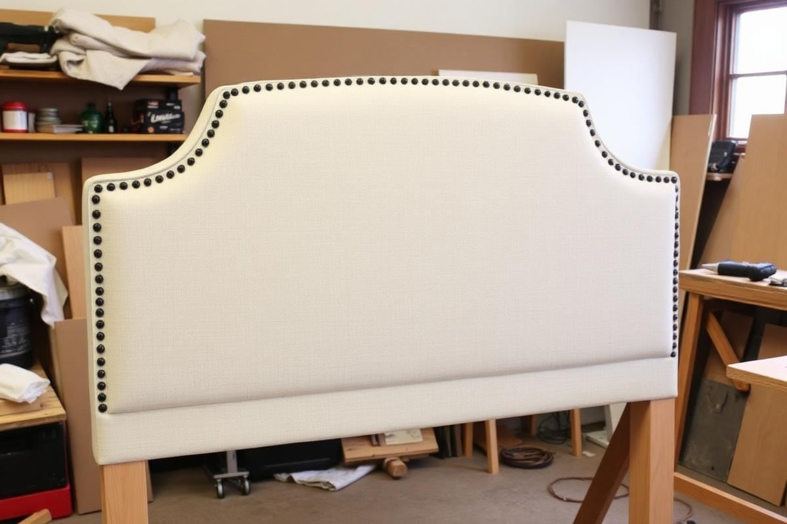
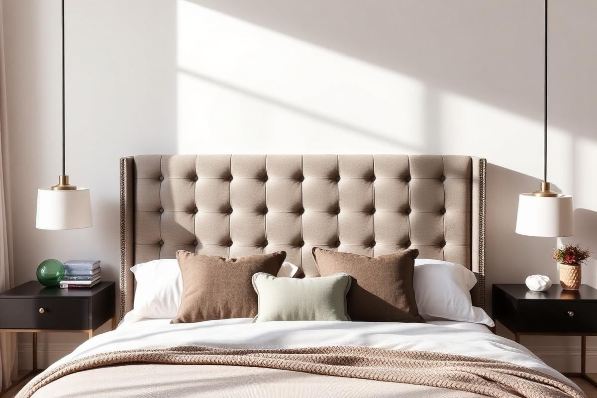

DIY Headboard Ideas: 6 Weekends, 6 Looks

DIY Headboard Ideas: 6 Weekends, 6 Looks is one of those topics where a little planning goes a long way. In this guide I walk through the process we use in real homes — not just what looks good in a photo, but what actually holds up over time.
Start here
Before you buy or move anything, measure the space and note how you actually use it. The best-looking room is one that matches how you live, so start with the routines: where you sit, where you drop keys, where the light falls in the afternoon.
The essentials
Focus on the pieces that do the most work. Get those right and the rest of the room comes together with much less effort. Aim for materials that patina rather than degrade, and colors you will still like in five years.
- Choose one clear focal point per room.
- Pick materials that improve with age.
- Layer textures instead of adding more colors.
- Leave visual breathing room — negative space is a design element.
Common mistakes
The mistakes we see most often are matching everything too tightly, over-scaling accessories, and skipping proper lighting. Fix those three and most rooms improve overnight.

The Luxe Upholstered Panel
For a genuinely custom and luxurious feel, the upholstered panel offers unparalleled sophistication. This isn't just fabric over plywood; it's about thoughtful layering and crisp tailoring. We'll start with 3/4-inch MDF, measuring 62 inches wide by 30 inches tall for a queen bed, allowing for a 1-inch overhang on each side of a standard 60-inch mattress. You'll need high-density foam (2 inches thick), Dacron batting, and your chosen upholstery fabric. For a classic linen look, expect to spend $25-40 per yard for a good quality indoor-rated fabric; you'll need about 3 yards for this size board if running the fabric horizontally. Factor in a pneumatic stapler (or heavy-duty manual one) and 1/2-inch staples. Expect to spend approximately $150-250 on materials, not including tools you might already own.
Step-by-Step for a Polished Finish
- Cut foam to MDF dimensions. Apply spray adhesive to MDF and carefully adhere foam.
- Wrap batting over foam and MDF, securing tightly to the back with staples. Ensure smooth, even coverage and neat corners.
- Lay upholstery fabric face down. Center the batting-wrapped board on top. Begin stapling from the center of each side, pulling the fabric taut as you go, working towards the corners. Aim for consistent tension.
- For neat corners, fold the fabric like a present: pull one side taut, staple. Then fold the adjacent side over, creating a neat pleat, and staple securely.
- Cut a piece of inexpensive muslin or felt slightly smaller than the back of the headboard. Staple it over the raw fabric edges and staples for a professional finish.
Reclaimed Wood: Rustic Charm
Channeling farmhouse chic or industrial vibes, a reclaimed wood headboard offers texture and character. The key here is sourcing quality lumber. Look for pallets (check their heat treatment stamp – 'HT' is safe, 'MB' for methyl bromide is not), old fencing, or even discarded barn wood. For a queen size, aim for a total headboard width of around 64 inches and a height of 36 inches above the mattress. You’ll need a 3/4-inch plywood backing panel, cut to 60 inches wide by 30 inches tall (this will be hidden by the wood strips). Your wood strips should be between 30 and 40 inches long, and varying widths from 3 to 6 inches will create dynamic interest. Rough estimate material cost: $75-150 depending on wood source – free pallets vs. purchased reclaimed planks.
Tips for a Naturally Beautiful Result
- Clean and sand your reclaimed wood thoroughly. Start with 80-grit sandpaper, then move to 120 and 220 to avoid splinters. A wire brush can enhance texture.
- Lay out your wood strips dry on the floor first. Arrange for color variation and fit before cutting or attaching. Alternate orientations if desired (horizontal, diagonal, or herringbone).
- Attach the wood strips to the plywood backing using wood glue and finish nails (1.5-2 inches). Use a nail gun for efficiency, but a hammer and nail set work too. Ensure nails are flush or slightly counter-sunk.
- Consider a thin coat of clear matte polyurethane or wax to seal the wood, protecting it while preserving its natural look. Test on a scrap piece first.
Painted Plywood: Graphic Impact
For a minimalist, modern, or utterly customizable look, painted plywood is your canvas. This option is budget-friendly and allows for incredible creative freedom. Start with a high-quality 3/4-inch birch or oak plywood sheet. For a full-size bed, a 54-inch wide by 40-inch tall panel is a good starting point. You can cut it into unique shapes—think arched tops, scalloped edges, or geometric patterns. You'll need painter's tape, a primer, and your chosen interior latex paints (satin or eggshell finish for durability). Consider a few small sample cans for a multi-color design. The total material cost here can be as low as $60-100 if you have basic painting supplies, making it one of the most accessible options.
Maximizing Your Design Potential
- Sand your plywood thoroughly (120-220 grit) to achieve a smooth surface. Clean off all dust before priming.
- Apply at least two coats of quality primer. This prevents grain raise and ensures your finish coats adhere evenly and true to color.
- For geometric patterns, use a ruler, pencil, and high-quality painter's tape (FrogTape is excellent for crisp lines). Press firmly to seal edges.
- Paint one color at a time, allowing each to dry completely before taping and painting the next. Remove tape while the paint is still slightly tacky to avoid pulling up edges.
- Finish with a clear matte or satin polyurethane topcoat for added protection, especially if it will be leaned against frequently.
Woven Cane: Contemporary Texture
Embrace the enduring appeal of woven cane for a headboard that's light, airy, and beautifully textured. This project involves a wooden frame and cane webbing, requiring a bit more precision. For a king-size bed, aim for an overall headboard dimension of 78 inches wide by 38 inches tall, with two cane panels, each approximately 36 inches wide by 30 inches tall (allowing for framing). You’ll construct a simple frame from 1x2 or 1x3 clear pine or oak. You'll need about 3 linear feet of 36-inch wide natural cane webbing. This isn't cheap; expect $30-50 per foot. Material costs (wood, cane, spline, wood glue) will likely run $180-300. This is an investment of time and materials, but the result is magazine-worthy.
Mastering the Cane Weaving Technique
- Cut your wood frame pieces to create two rectangular openings for the cane. Use pocket hole joinery or dowels for strong, clean connections.
- Rout a 1/4-inch wide by 3/8-inch deep groove along the inside edge of your frame's openings. This groove will hold the cane and locking spline.
- Soak your cane webbing in warm water for at least 30 minutes to make it pliable. While still damp, lay it over the routed opening, centering it carefully.
- Using a wooden wedge or a rubber mallet and a blunt-edged tool, gently push the edges of the cane into the routed groove. Start in the middle of each side and work towards corners.
- Once the cane is seated, apply a bead of wood glue into the groove over the cane. Then, press your cane spline (a narrow, pre-cut strip) into the groove, trimming any excess cane. Allow to dry thoroughly. The cane will tighten as it dries.
Key takeaways
- Match the room to how you actually live.
- Anchor with one main piece and clear lighting.
- Layer textures, not colors.
- Leave breathing room around every object.
Frequently asked questions
Where should I start?
Start with the largest piece and the light. Everything else — art, textiles, small objects — is easier to place once those two anchors are set.
What is a realistic budget?
Prioritize the pieces you touch every day. Spend more on those and less on decorative items, which are easy to swap over time.
How long should this last?
A well-chosen main piece should last 10–15 years. Refreshes come through textiles, art, and accessories, not full replacements.

Sophia Bennett is a certified interior stylist and the senior editor at Styleire. She has spent more than eight years helping homeowners and renters create warm, functional interiors, with hands-on experience across small city apartments and family homes. Her work has been informed by close collaboration with independent designers, craftspeople, and product testers.
View full profile →Related reading

Cozy Bedroom Ideas: 12 Changes That Actually Make a Difference
Cozy is a feeling built from small, specific choices. Here are the twelve that make the biggest difference.

DIY Wall Art Ideas That Don't Look DIY
You don't need to paint to make wall art. Some of the best DIY pieces are almost entirely assembly.

Upcycling Furniture Basics: A Beginner's First Project
Your first upcycle should be a small piece with good bones. Here is how to do it right the first time.